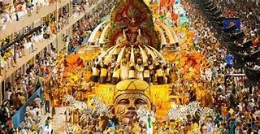
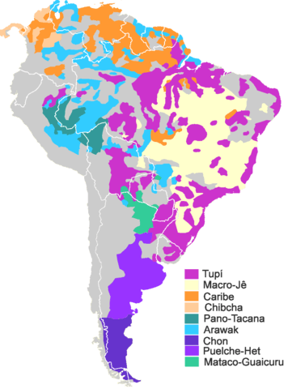
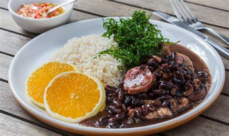

BRAZIL |
| CULTURA |
LENGUAS |
GASTRONOMIA |
LUGARES |
|  |
 |
 |
.jpg) |
| Musica y Baile:Brasil es conocido por sus ritmos contagiosos como la samba y la bossa nova. La música y el baile son una parte integral de la vida brasileña, con festivales como el Carnaval que muestran la energía y alegría del país |
Portugués: Es el idioma oficial y la lengua materna de la mayoría de la población brasileña. |
Feijoada: Es el plato nacional de Brasil y consiste en un guiso de frijoles negros con diferentes tipos de carne de cerdo. |
Río de Janeiro: Conocida por sus icónicas playas de Copacabana e Ipanema, el Cristo Redentor y el Pan de Azúcar, Río de Janeiro es una ciudad vibrante y llena de vida |
| Arte y literatura: La literatura brasileña cuenta con escritores destacados como Machado de Assis y Jorge Amado. El cine brasileño también ha ganado reconocimiento internacional con películas como "Orfeo negro" |
Español: Aunque no es tan común como el portugués, muchas personas entienden y hablan español debido a la cercanía con países hispanohablantes. |
Churrasco: Es la versión brasileña de la barbacoa y se prepara con diferentes cortes de carne asada a la parrilla. |
Salvador de Bahía: Esta ciudad es famosa por su rica herencia afrobrasileña, sus coloridas calles en el barrio de Pelourinho y sus hermosas playas |
| Vestimenta: La vestimenta tradicional varía según la región, pero algunos trajes típicos incluyen los de Salvador de Bahía, que reflejan las raíces afrobrasileñas |
Inglés: Es una lengua extranjera que se enseña en las escuelas y se habla principalmente en entornos turísticos y comerciales |
Moqueca: Es un guiso de pescado o mariscos cocinado en leche de coco con cebolla, ajo, tomate y cilantro |
Manaos: Ubicada en el corazón de la Amazonía, Manaos es la puerta de entrada a la selva amazónica. Desde aquí, puedes embarcarte en emocionantes excursiones para explorar la biodiversidad de la región, visitar comunidades indígenas y ver la confluencia de los ríos Negro y Amazonas. |
| Religión: Brasil es un país mayoritariamente católico, pero también hay una gran diversidad de creencias, incluyendo el candomblé y la umbanda, que tienen raíces africanas |
Lenguas indígenas: Hay numerosas lenguas indígenas habladas en Brasil, como el guaraní, el tikuna y el kaingang. Algunas de estas lenguas tienen miles de hablantes y son muy importantes en las comunidades indígenas. |
Pão de Queijo: Son pequeños panes de queso hechos con harina de tapioca y queso. |
Fernando de Noronha: Un archipiélago paradisíaco en el Océano Atlántico, conocido por sus playas vírgenes, aguas cristalinas y abundante vida marina. Es ideal para el buceo y el esnórquel. |
| |